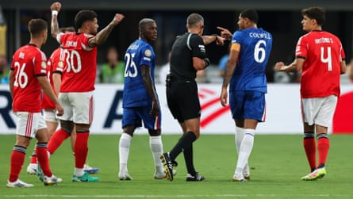

C helsea never won any popularity contests during the Roman Abramovich era. Calling them obnoxious is intended as a compliment. Infused with a champion spirit after appointing José Mourinho in 2004, Chelsea were renowned for their resilience and snarl, impossible to intimidate and more concerned with winning trophies than whether outsiders thought they were a great bunch of lads or liked their style of play.
Their mentality was unrivalled and lasted even after Mourinho left. Since Abramovich’s sale in 2022 , though, Chelsea have gone down a very different road when it comes to building a dressing room culture. There are no ready-made talents arriving at Stamford Bridge and there have been plenty of times during the past three years when supporters have been left wondering why a team once marshalled by Petr Cech, Ashley Cole, John Terry, Frank Lampard and Didier Drogba were so lacking in character.
Abramovich’s successors are done listening to their critics. Pilloried for embarking on a strategy of targeting young players on long contracts, the Todd Boehly-Clearlake Capital ownership sense vindication is coming. The argument that leaders can be developed is starting to hold water, even if it remains valid to argue that bringing in an established star or two in key positions could help Chelsea get over the line in the big competitions. Paris Saint-Germain did not win the Champions League with a team of kids; they also had Marquinhos (31) in defence, Fabián Ruiz (29) playing brilliantly in midfield and Ousmane Dembélé (28) scoring for fun up front.
Even so, there is a growing feeling Chelsea will emerge from the adversity and upheaval after the change of ownership with a stronger mentality and greater togetherness. There was particular satisfaction at how they fared against Benfica in the last 16 of the Club World Cup last Saturday. An implosion would not have been surprising after a weather delay lasting close to two hours was followed by Benfica forcing extra time after a controversial 95th-minute penalty.
Chelsea responded, winning 4-1 to set up a quarter-final with Palmeiras on and much was made of Levi Colwill’s performance. True, it was risky when the centre-back wagged a finger at the referee, Slavko Vincic, and appeared to swear at the Slovenian after Benfica were awarded their spot-kick. There are usually ramifications for behaving like that and Colwill was lucky not to receive at least a yellow card. Chelsea will expect the 22-year-old to channel his emotions better.
Levi Colwill (right) has words with Slavko Vincic after the referee awarded Benfica a late penalty.Photograph: Buda Mendes/Getty Images
Equally, they like Colwill is showing fight and desire and he has stepped up and taken on more responsibility in recent months. Colwill scored the winner when Chelsea clinched Champions League qualification by beating Nottingham Forest at the end of last season and his aggression proved vital against Benfica. He refused to be bullied and was involved in the game’s turning point, pressing high to win possession and drawing Gianluca Prestianni into a foul that led to the 19-year-old forward being sent off with the game locked at 1-1.
There is room for improvement. As an academy product, Colwill is under more pressure than most to show leadership in central defence. Fans demand a lot from one of their own. Proving that you can be the next Terry is not easy.
Colwill knows he is not the finished article. He has toughened up during the past 12 months, but Chelsea want him to bulk up even more and become more dominant in the air.
“We could be here for ages,” he says after being asked what part of his game needs to be better. “I am nowhere near where I would like to be. Defending one-v-one has been tough, but I think I’ve proved that I’m getting a bit better. I’m good at times when I’m trying to make passes and there are other times where I’ve been a bit lazy.”
The England international is hard on himself. “You’ve got to be if you want to be the best and strive for the best things possible,” he says. “You might think a pass is easy – you can take your mind off it. You take your mind off something for half a second and that can make a big, big difference.
“We all know how big this club is and how the culture of the club has always been to win. We’re just trying to reinforce that to the young boys, to the boys coming in, that this club is for winners only. That’s what we need to strive towards. That’s what we want to do together.”
Colwill echoed what Chelsea are saying internally. They see a group of kids growing together. There was amusement at the otherwise languid Cole Palmer losing his cool and picking up a booking for being involved in a shoving match after Prestianni’s red card. Perhaps some of the old snarl is returning.